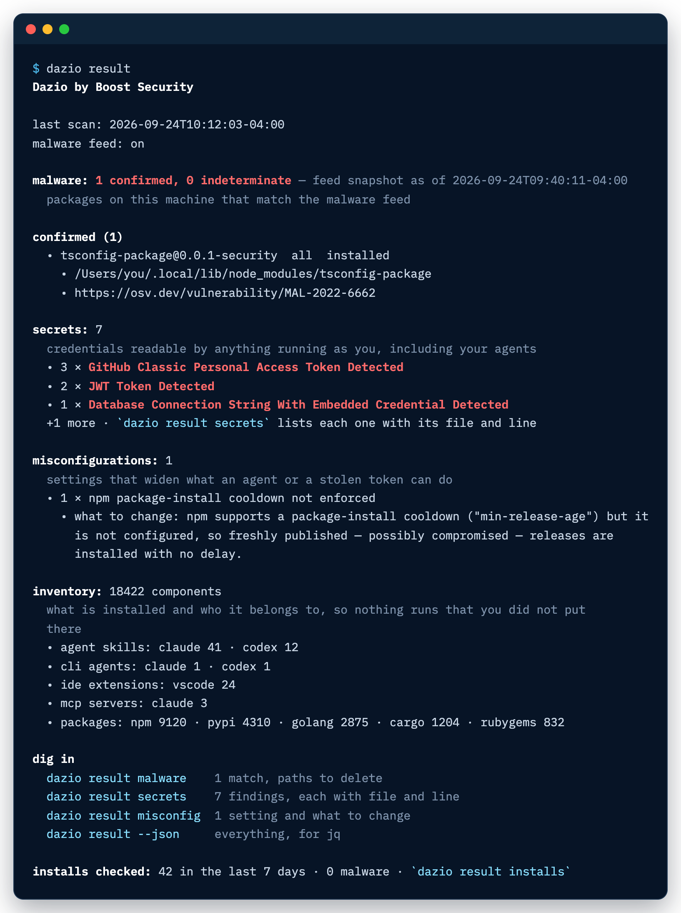
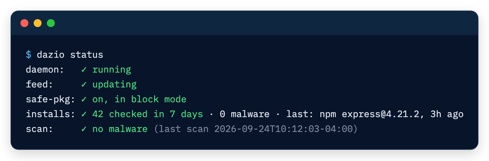

Quick start
Dazio can run once and hand you a report, or stay on in the background and check every package install before it lands. Start with the scan either way.
One-time scan
dazio scanThe first scan is guided. It takes about two minutes and prints what it found on this machine: malware matches, exposed secrets and risky settings. It asks you to accept the terms, registers this installation and downloads the malware feed so it can check your packages.
It ends with one offer: turn on continuous protection. Declining installs
nothing. Later runs of dazio scan are terse and remind you of dazio protect.
To see the last result again:
dazio resultA sample of what it prints:

For a scan that touches nothing outside this process, run it with --local:
dazio scan --localIt fetches, registers and saves nothing. Without a malware feed already on this machine, it reports malware as not checked.
Always-on protection
Accept the offer at the end of the first scan, or run:
dazio protectIt shows each part and what it means before anything is written:
- a background daemon, started at login, that rescans every hour and on file changes
- malware feed updates every hour
- email alerts when a package here matches the feed, once you follow the confirmation link sent to you
- safe-pkg, which checks every package install against the feed before it lands, and lists every file it edits before writing it
Declining installs nothing.
safe-pkg starts in block mode: an install of a package that matches the malware feed is refused, and the refusal names the command that lets that one version through. To have those installs proceed and only be recorded, choose warn when you customize the offer, or later run:
dazio safe-pkg enable --mode warnIf safe-pkg is already enabled, accepting the offer keeps the mode it runs in.
To see what safe-pkg checked, and whether the daemon is running:
dazio result installs
dazio statusOn a protected machine, dazio status reads like this:

Check one command
dazio protect -- npm installThis runs that one command with its installs checked against the feed, in block mode unless safe-pkg is already on, where it uses your mode. It leaves your package-manager config untouched. It needs the background daemon running and the feed enabled; without them it says it is running unprotected and runs the command unchecked.